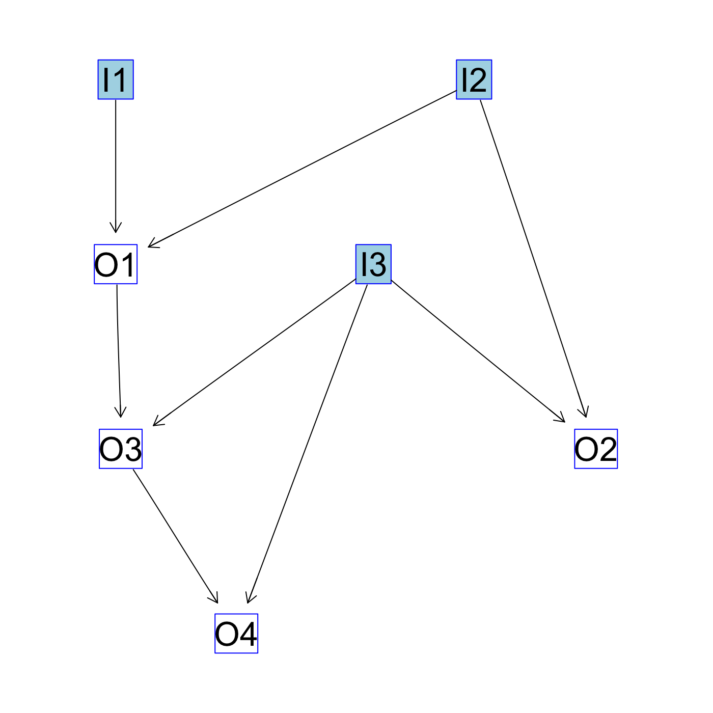

wf4ni packagevignettes/wf4ni.Rmd
wf4ni.Rmdwf4ni packageThere are a lot of packages in the R ecosystem focused on several aspects of Neuroimage processing, many of them listed in the CRAN Task View: Medical Imaging section: oro.nifti, oro.dicom, RNifti, fmri, divest (among others) for reading/writing of images; ANTsR, fslr for more advanced processing methods; RNiftyReg specialized in registration, mritc focused in image segmentation. Many more, for DTI, fMRI, molecular imaging, and visualization are available in CRAN.
However, to get a complete Neuroimaging pipeline working, it is common to rely on several different packages, and, in general, no single package can offer all the functionalities desired. Tracking the requirements and dependencies of a pipeline is time-consuming, since the user has to manually find, for each function used, the packages it depends on.
In addition, the most typical form of building a pipeline in R is via scripting. Once the needed functions are defined or imported from a third-party package, one or more scripts are written in order to get all processes done.
But scripts are error-prone, difficult to trace and debug if the script is large, and require some level of customization when one tries to run the script in a different environment (computer, laboratory…). These cons make us think of defining self-contained workflows, easily shareable, which can perform the same operations as a script but with greater legibility and traceability.
The goal of this package is to provide certain features to manage the situations before:
R function (including those from other packages, such as ANTsR or fslr) as a part of it. At definition time, the package warns about inconsistencies on the flow from inputs to outputs (undefined functions or variables).R, that is, something that can be computed in runtime. This means that a process in the pipeline can be, for example, a function to generate a plot, or to compute image statistics, or a function that wraps a random forest which has been previously trained to infer a labelling on the input image. The wf4ni package provides the tools to extend this functionality to other computations: machine learning or deep learning models, for instance.The following packages are imported by wf4ni:
stringr, styler, devtools, igraph, RCurl, R6, RNifti, neurobase, oro.nifti, scales, zip, crayon, prettyunits, pryr, purrr, methods, utils
Please, install them before attempting the installation of wf4ni:
Currently, this package is not in CRAN. The only way to get this package installed is by using the remotes package and installing wf4ni from GitHub:
wf4ni modelIn wf4ni, a flow is an ordered collection of processes that convert inputs into outputs, such that the output of a process may be the input to another one.
By defining the appropriate functions, one can model the pipeline in the correct order and obtain a flow as the one depicted in the following figure:

Original inputs in the flow are I1, I2 and I3 (in green). Other nodes represent the output of a given function, using the incident nodes as inputs for that function.
A flow object stores information about the functions used and their relationships, building what is called a computation graph.
A simple example:
library(wf4ni)
f <- function(a, b) {a + b}
my_flow <- NIflow$new(name = "test", inputs = c("I1", "I2"))
my_flow$add(what = f, inputs = c("I1", "I2"), output = "O1")
my_flow$add(inputs = "I3")
my_flow$add(what = f, inputs = c("I2", "I3"), output = "O2")
my_flow$add(what = f, inputs = c("O1", "I3"), output = "O3")
my_flow$add(what = f, inputs = c("O3", "I3"), output = "O4")
my_flow$plot()This flow produces the pipeline shown in the figure above. It is not retricted to NIfTI images, as the function f used to define some of the outputs is not designed specifically for Neuroimaging (it is just the sum of its two arguments).
By using
my_flow$execute(inputs = list(I1 = 3, I2 = 2), desired_outputs = c("O1"))
my_flow$execute(inputs = list(I1 = 3, I2 = 2, I3 = 4),
desired_outputs = c("O1", "O2", "O4"))we obtain, in the first case, a list with just one field named “O1” whose value corresponds to the application of the workflow up to the required output. In the second case, the list contains fields “O1”, “O2” and “O4”, with the corresponding values.
> my_flow$execute(inputs = list(I1 = 3, I2 = 2), desired_outputs = c("O1"))
$O1
[1] 5
> my_flow$execute(inputs = list(I1 = 3, I2 = 2, I3 = 4),
desired_outputs = c("O1", "O2", "O4"))
$O1
[1] 5
$O2
[1] 6
$O4
[1] 13More advanced examples, with applications to common pipelines in Neuroimaging, are in the vignettes of this package.